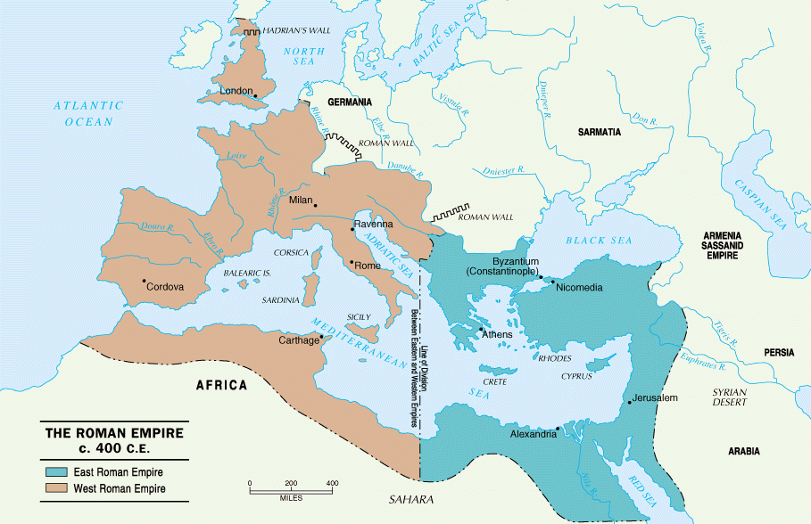
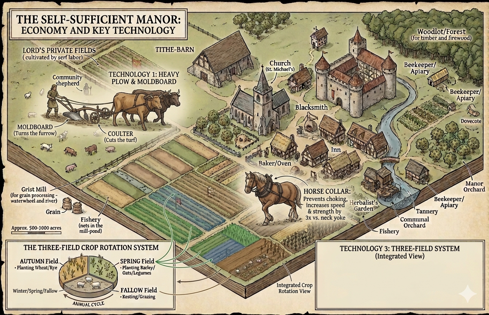

AP World History · Unit 1 · Topic 1.6
Political, Social, and Religious Structures · c. 1200 to c. 1450
The Question
Where in the World

Rome, Milan, Carthage, London. Imperial government here broke down during the 400s.
Ruled from Constantinople, and it kept going for roughly another thousand years.
Written Roman law, Greek learning, and the wealth of the largest Christian city in the world.
Key Takeaway
Rome did not vanish. It collapsed in the west and survived in the east, and medieval Europe means the western half.
The Problem
While Rome governed the west
One army, paid and posted along the borders
Taxes collected across the whole empire
Courts and a single written law
Coined money everyone accepted
Roads, and trade that could travel them safely
After it stopped, in the west
No army that could reach you in time
No tax system, so no way to pay soldiers
No court above the local one
Very few coins, so people paid in goods and labor
Roads unsafe, so trade shrank to the next village
Key Takeaway
Take all of that away and one problem stands above the rest. Nobody could keep you safe. Everything today is a response to that.
The Word for What Replaced It
Centralized · Song China
An order from the emperor reaches a village a thousand miles away, carried by officials he appointed.
Decentralized · Medieval Europe
Hundreds of separate lords, each with his own land, his own court, and his own soldiers.
Key Takeaway
Decentralization is power broken into many small local pieces instead of held by one government. Not weak. Just not gathered in one place.
The Answer
Feudalism held the politics together. Manorialism held the economy together. The Church held society together.
Part One · The Political System
A ruler with no tax system cannot pay soldiers in money. So he pays them with the one thing he does have.
Key Takeaway
Feudalism is a private agreement between two people, not a national law. That one fact explains the next slide.
Part One · The Structure
Key Takeaway
A king could not order a knight he had never met, because that knight had promised nothing to him. Fragmentation is feudalism working, not feudalism failing.
Part Two · The Economic System
Feudalism explains who commands. Manorialism explains who eats. A lord could afford a warhorse, armor and knights only because a manor was feeding him.
Key Takeaway
A serf was unfree, but a serf was not a slave. He was not property, could not be sold away from the land, farmed his own strips, and had customary rights a lord was expected to honor.
Part Two · One Manor, Mapped

Using them cost a fee. He took his cut at the one point everyone had to pass through.
The Church’s tenth, stored on site. The Church is already in this picture.
Key Takeaway
Close to self-sufficient. Not a virtue, but what an economy looks like when roads are unsafe.
Part Two · Why the Manor Produced a Surplus
Technology one
A coulter cuts the soil and a moldboard turns it over.
Northern Europe’s wet, heavy clay could finally be farmed. The old scratch plow only worked on light Mediterranean soil.
Technology two
A rigid padded collar rests on the shoulders instead of pressing on the windpipe.
A horse can now pull hard without choking, and it works faster and longer than an ox, though it eats more.
Technology three
Autumn grain, then spring grain and legumes, then one field resting.
Land in use rises from about a half to about two thirds. The legumes restore the soil, and the oats feed the horse.
Key Takeaway
More food, then more people, then more people than the fields need. That surplus is what makes towns possible.
Part Three
The one institution that crossed every border, in a place that had hundreds of them.
Part Three · Social Stability
One language
The same Latin mass in Ireland and in Poland. An educated person could travel and still be understood.
The parish
In most villages, the only institution of any kind. Birth, marriage and death were recorded nowhere else.
Monasteries
Schools, hospitals, farms, and the copying of books. Nearly all Latin literacy ran through them.
Canon law & the tithe
Its own written law and its own courts, plus a tenth of production. The closest thing to a tax that reached everyone.
Key Takeaway
Unifying does not mean everyone agreed. It means one institution did the jobs a government does, across a continent that did not have one.
Part Three · Spiritual Authority as Political Power
1208
The pope closes the churches of England. No mass, no marriage, no burial in holy ground, for the whole kingdom. It lasted over six years.
1209
John is cut off from the Church, and his subjects are formally released from their oaths of loyalty to him.
1213
Facing invasion and barons who will not back him, John gives in and hands England to the pope to hold as a fief.
1215
The barons force Magna Carta on John in June. Innocent III declares it invalid ten weeks later.
Key Takeaway
The pope sent no army. He did not need one. Feudalism ran on sworn oaths, and the Church could dissolve them.
The Comparison Your Checkpoint Wants
| Medieval Europe | Song China | |
|---|---|---|
| Who collects taxes | A lord collects locally. A king has to ask. | Salaried officials collect for the emperor. |
| Who staffs it | Nobles who inherited land, and churchmen. | Scholars who passed an exam. |
| What binds it | Personal oaths, and a shared Church. | A bureaucracy reporting to the center. |
| Where power sits | Decentralized, in hundreds of places. | Centralized, in one. |
Key Takeaway · this grid is in your eBook, do not copy it
Ranking them earns nothing. Explaining why the difference existed earns everything.
What You Must Be Able To Do
Checkpoint 1 · Fragmented power, and no coach
Checkpoint 2 · The Church, and change over time
Today covered the Church. Towns, guilds and universities are in your First & 10 reading and your eBook chapter, and Checkpoint 2 needs both halves.
Key Takeaway · both checkpoints
Name one system. Use specific evidence. Explain why, not only what.
Presenter notes
Press Escape or ? to close.